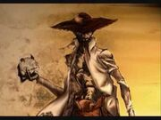

The first one says that The Whistle Man was a boy who killed and gutted his father after he (his father) raped and killed his girlfriend because the father thought she was promiscuous. After this his grandfather tied him up to a tree, destroyed his back with lashes and cleaned up his wounds with boiling water and chili pepper as a punishment for killing his father, then untied the boy, throwing a hungry dog called “Tureco” at him who bit his ankles. The legend says that the grandfather cursed him to carry a bag with the bones of his father with the dog following and biting him for all eternity. The second version of the legend says that the Whistle Man was a capricious boy who had everything he wanted. One day he wanted to eat animal entrails and his father came back from hunting with empty hands, so the boy got mad, killing and gutting his father, bringing the entrails of his father to his mother to be cooked. When she found out that this was not an animal, she and the boy’s grandfather tied him to a tree and the rest of the story remains the same. A third version of The Whistle Man is one that, in my opinion, has quite an extraordinary addition of idioms to the story. In Venezuela we used to say “A twisted tree never straightens”, which means that a bad person never changes, and in the end will always be the same. I disagree with this expression because everybody has the chance to evolve into something better, of course there will always be exceptions. So the boy, before becoming the The Whistle Man, was a temperamental young boy, who had everything he wanted, and one day he went hunting in the plains with his father. While they were walking, a twisted tree stepped in their way. The boy asked his father to straighten it out, but the father said: “No, a twisted tree, never straightens, you know that”. After that the boy told his father: “If you always knew it, why did you let me grown the way I am, like a twisted tree? Now I will never be able to change the way I am, and it’s your fault”; then the boy killed his father, brought back home just his father’s visceras and gave them to his mother to be cooked.  The whistler’s mother found out that those entrails were not from an animal because of how they looked, so she informed her father-in-law, and the rest of the story is the same as the other versions. The legend says that he became a 3-meter-tall boy with long legs who is seen during dry season at the top of the trees playing with dust, and during raining season around the month of May, at any time, anywhere, roaming with a thirst for vengeance, hunting drunk men, hitting them with a stick until it kills them, sucking their belly button to extract the alcohol from their bodies, and eating their visceras. The main sign of him being around is hearing the whistle that makes the seven musical notes A, B, C, D, E, F, G, with the following scale A, B, C, D ascending and E, F, G, A descending. If you hear the whistle far away, it means that he is just next to you, and if you hear the whistle close by, it means that he is far away, and that the only way to escape alive from him is to say out loud the name of the dog Tureco, make the sound of a dog barking, snap a whip or show him a chili pepper. During heavy rainy nights, The Whistle Man sometimes walks away from the roads and visits the houses of the people to wait under the roof of the front yard of a house for the rain shower to stop, tossing his bag, and with lots of concentration starts counting one by one the bones of his victims, including his father’s. If any member of the house hears to the sound of the bones clacking while the man is counting them, nothing happens, but if no one in the house hears to the clacking sound, the next morning one member of the family will never wake up. Dámaso Delgado, a Venezuelan poet and writer from the state of Portuguesa, was the first one who wrote the story of The Whistle Man in 1966, recorded it in 1967 and broadcasted it all over the country by radio, which is how this legend became famous in Venezuela. Dámaso ensures that he have seen and heard the specter once, but he could escape from harm, thanks to his faith in God and the barking of all dogs that were in that place with him.*